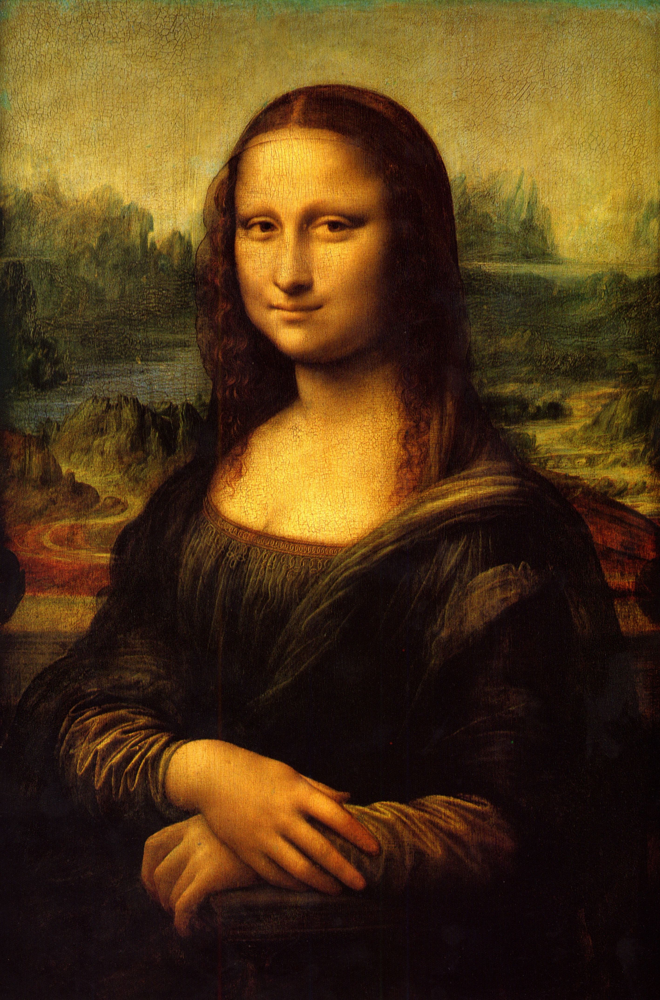

ITÁLIAHistória e Cultura |
-
ROMA ANTIGA (753 a.C. – 476 d.C.)
A Roma Antiga foi uma das civilizações mais influentes da história, originada no século VIII a.C. na península Itálica e estruturada em três grandes fases: Monarquia, República e Império. Durante o seu auge imperial, os romanos conquistaram vastos territórios ao redor do mar Mediterrâneo, deixando um legado duradouro na política, no direito, na arquitetura e na língua latina, até que divisões internas e invasões de povos germânicos levaram à queda do Império Romano do Ocidente em 476 d.C.

-
RENASCIMENTO (Séculos XIV – XVI)
O Renascimento foi um movimento cultural e científico surgido na Itália no século XIV que marcou a transição da Idade Média para a Idade Moderna. Inspirado na Antiguidade Clássica, ele colocou o ser humano no centro do universo (humanismo), rompendo com o teocentrismo medieval. Esse período transformou a Europa ao promover o pensamento crítico, a revolução científica e inovações artísticas revolucionárias lideradas por gênios como Leonardo da Vinci.

-
UNIFICAÇÃO (1861)
A Unificação Italiana foi o processo político e militar do século XIX que transformou uma península fragmentada em um único Estado-nação, consolidado com a criação do Reino da Itália em 1861. Liderado pelo Reino de Piemonte-Sardenha — com a diplomacia de Cavour e a força militar de Garibaldi —, o movimento expulsou o domínio austríaco e unificou os territórios do norte e do sul sob ideais nacionalistas e liberais.